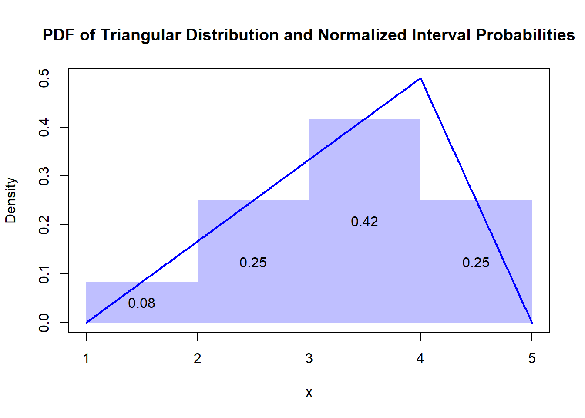

Discretization of continuous distributions
Discretization of continuous distributions refers to the process of converting a continuous probability distribution into a discrete probability distribution. This involves dividing the range of possible values into a finite number of intervals and approximating the probability of each interval.
Transform quantitative risk management into qualitative
Discretization can be used to transform quantitative risk management into qualitative risk management by categorizing continuous risk measures into discrete classes. This allows for a simpler approach to risk assessment. However, this process can result in a loss of information and precision.
Examples of discretization
In credit risk management, a continuous variable like probability of default (PD) can be discretized into categories such as low, medium, and high risk. Instead of dealing with precise PD values (e.g., 0.13), a bank might categorize borrowers into these risk bands to simplify decision-making processes for loan approvals or pricing.
In cyber security risk management, discretization could be the classification of risks based on their level of impact, such as low, medium, high, and critical. This qualitative assessment helps prioritize risk mitigation actions without requiring precise quantitative measures of each risk’s potential impact.
Discretization process
Discretization is typically done in the following steps:
1. Define intervals: Decide on the number of intervals to divide the range of the continuous variable into.
2. Interval assignment: Assign each continuous value to an interval based on its value.
3. Probability approximation: Calculate the probability for each interval, which can be done by integrating the continuous probability density function over each interval or by using other approximation methods. This process results in a set of discrete outcomes with associated probabilities. It is important to choose the number and size of intervals carefully.
Some common methods for discretization include:
Equal-width binning: Divides the range of values into intervals of equal size.
Equal-frequency binning: Divides the data such that each bin has approximately the same number of data points.
Clustering-based discretization: Uses clustering algorithms to group values, where each cluster forms a bin.
Entropy-based discretization: Uses information gain to find optimal bin boundaries.
K-means discretization: A variation of clustering-based discretization using the k-means algorithm. Each method has its own advantages and is chosen based on the specific requirements of the data and analysis.
Choosing the right discretization method depends on several factors:
Data distribution: Understand the underlying data distribution. Some methods may work better for uniform distributions, while others are better for skewed distributions.
Purpose of analysis: Consider what you want to accomplish. E.g., if preserving the distribution of data is important, equal-frequency binning might be suitable.
Data size: Large datasets may require efficient methods to reduce computational load.
Model requirements: Some machine learning models may have specific requirements for how the data should be discretized.
Interpretability: Methods like equal-width or equal-frequency binning are straightforward and easy to interpret.
Trade-off
It is important to evaluate the effect of the discretization.
Discretization of continuous distributions can present several challenges, such as:
Loss of detail: Simplifying data into categories may overlook important nuances.
Subjectivity: The process of categorizing can be subjective and inconsistent.
Over-simplification: Critical decisions might be made based on overly simplified data.
Dynamic nature: Cyber threats evolve rapidly, and static categories may become outdated quickly. These challenges require careful consideration to ensure effective risk management.
Example
Given the triangular distribution with a minimum value of \(a = 1\), a maximum value of \(b = 5\), and a mode \(c = 4\), we need to calculate the probability mass for each interval \([1, 2)\), \([2, 3)\), \([3, 4)\), and \([4, 5)\).
The probability density function (PDF) \(f(x)\) of a triangular distribution is defined as: \[f(x) = \begin{cases} \frac{2(x-a)}{(b-a)(c-a)} & \text{for } a \leq x \leq c \\ \frac{2(b-x)}{(b-a)(b-c)} & \text{for } c < x \leq b \end{cases}\]
For our specific case: \[f(x) = \begin{cases} \frac{2(x-1)}{(5-1)(4-1)} = \frac{2(x-1)}{12} = \frac{x-1}{6} & \text{for } 1 \leq x \leq 4 \\ \frac{2(5-x)}{(5-1)(5-4)} = \frac{2(5-x)}{4} = \frac{5-x}{2} & \text{for } 4 < x \leq 5 \end{cases}\]
Now, we calculate the area under the curve for each interval:
1. Interval \([1, 2)\):
\(\int_{1}^{2} \frac{x-1}{6} \, dx = \frac{1}{6} \int_{1}^{2} (x-1) \, dx\) \(= \frac{1}{6} \left[ \frac{(x-1)^2}{2} \right]_{1}^{2}\) \(= \frac{1}{6} \left( \frac{(2-1)^2}{2} - \frac{(1-1)^2}{2} \right)\) \(= \frac{1}{6} \left( \frac{1}{2} - 0 \right)\) \(= \frac{1}{6} \cdot \frac{1}{2}\) \(= \frac{1}{12}\)
2. Interval \([2, 3)\):
\(\int_{2}^{3} \frac{x-1}{6} \, dx = \frac{1}{6} \int_{2}^{3} (x-1) \, dx\) \(= \frac{1}{6} \left[ \frac{(x-1)^2}{2} \right]_{2}^{3}\) \(= \frac{1}{6} \left( \frac{(3-1)^2}{2} - \frac{(2-1)^2}{2} \right)\) \(= \frac{1}{6} \left( \frac{4}{2} - \frac{1}{2} \right)\) \(= \frac{1}{6} \left( 2 - 0.5 \right)\) \(= \frac{1}{6} \cdot 1.5\) \(= \frac{3}{12} = \frac{1}{4}\)
3. Interval \([3, 4)\):
\(\int_{3}^{4} \frac{x-1}{6} \, dx = \frac{1}{6} \int_{3}^{4} (x-1) \, dx\) \(= \frac{1}{6} \left[ \frac{(x-1)^2}{2} \right]_{3}^{4}\) \(= \frac{1}{6} \left( \frac{(4-1)^2}{2} - \frac{(3-1)^2}{2} \right)\) \(= \frac{1}{6} \left( \frac{9}{2} - \frac{4}{2} \right)\) \(= \frac{1}{6} \left( 4.5 - 2 \right)\) \(= \frac{1}{6} \cdot 2.5\) \(= \frac{5}{12}\)
4. Interval \([4, 5)\):
\(\int_{4}^{5} \frac{5-x}{2} \, dx = \frac{1}{2} \int_{4}^{5} (5-x) \, dx\) \(= \frac{1}{2} \left[ 5x - \frac{x^2}{2} \right]_{4}^{5}\) \(= \frac{1}{2} \left( (5 \cdot 5 - \frac{5^2}{2}) - (5 \cdot 4 - \frac{4^2}{2}) \right)\) \(= \frac{1}{2} \left( (25 - 12.5) - (20 - 8) \right)\) \(= \frac{1}{2} \left( 12.5 - 12 \right)\) \(= \frac{1}{2} \cdot 0.5\) \(= \frac{1}{4}\)
Thus, the probabilities for each interval are:
\([1, 2): \frac{1}{12}\)
\([2, 3): \frac{1}{4}\)
\([3, 4): \frac{5}{12}\)
\([4, 5): \frac{1}{4}\)
Summing these probabilities, we get: \[\frac{1}{12} + \frac{1}{4} + \frac{5}{12} + \frac{1}{4} = \frac{1}{12} + \frac{3}{12} + \frac{5}{12} + \frac{3}{12} = \frac{12}{12} = 1\] This confirms that the total probability is 1, as expected.
Alternative calculation method
Note
Instead of calculating with integrals, the interval areas can be calculated from the geometric shapes.

Expected value: \[E(x) = \frac{a+b+c}3 = \frac{1+5+4}3 = 3.33\]
The probability of the expected value is: \[F(x=E) = \frac{2(b - x)}{(b - a)(b - c)}\] Substituting ( a = 1 ), ( b = 5 ), ( c = 4 ), and ( x ) with the expected value of approximately 3.33, we get:
\[F(3.33) = \frac{2(5 - 3.33)}{(5 - 1)(5 - 4)} = 0.83\]
Conclusions
In most cases, not much is gained from a discretization process that results in a set of discrete outcomes with associated probabilities. The discretization of a continuous probability distribution to a single value is often desired. For example, if a risk is to be entered as a point in a two-dimensional risk matrix.
This illustrates the dilemma of reducing a risk described by a probability distribution function to a single data point. Neither a continuous distribution nor a discrete distribution can be reduced to a single point.
The mathematical explanation is that the triangular distribution, like all continuous probability distributions, assigns zero probability to any single point. This is a general property of continuous distributions because the probability of any single exact value is zero.
Can the expected value and the probability of the expected value at least be used as an approximation?
A triangular distribution is defined by three parameters: the minimum value \(a\), the maximum value \(b\), and the mode \(c\), where \(a \leq c \leq b\).
The probability density function of the triangular distribution in the interval \(𝑥∈[𝑎,𝑏]\) is defined by \[ \begin{equation} f(x) = \begin{cases} \dfrac{2(x-a)}{(b-a)(c-a)} & \text{for } x \in [a, c] \\ \dfrac{2(b-x)}{(b-a)(b-c)} & \text{for } x \in (c, b] \\ {0} & \text{else} \end{cases} \end{equation}\] The expected value (mean) of a triangular distribution is given by the formula: \[\mu = \frac{a + b + c}{3}\]
- The probability that \(X = \mu\) is zero.
- The expected value \(\mu\) of the triangular distribution is influenced by all three parameters \(a\), \(b\), and \(c\).
- The density \(f(\mu)\) can be analyzed to understand how probable it is to get values close to the mean, but the exact probability at \(\mu\) is zero.